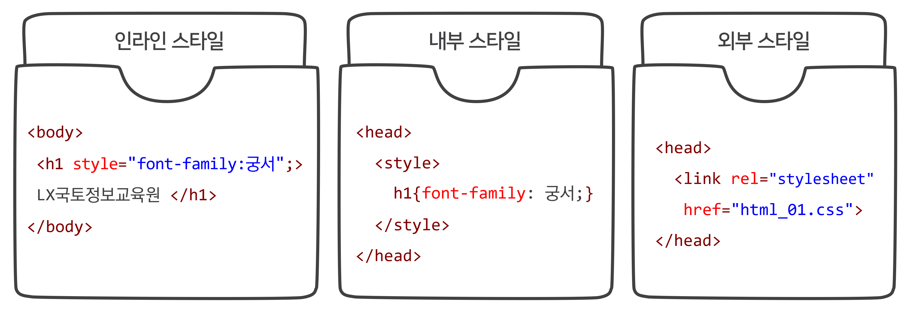
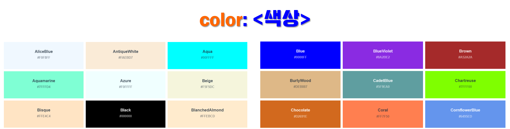

CSS 기초
1. CSS 개념
-
Cascading Style Sheets의 약어로 텍스트 색상이나 크기, 이미지 크기나 위치, 표 색상, 배치 방법 등 웹 문서의 디자인 요소를 담당
-
CSS Zen Garden(http://csszengarden.com) 사이트 접속해서 확인
-
스타일 형식은 선택자 다음에 중괄호({})가 오고 그 사이에 속성을 입력
- 중괄호 안에 들어가는 속성과 속성 값은 콜론(:), 속성과 속성 값 쌍 다음에는 세미콜론(;)으로 구분

스타일 형식 보기(클릭)
p{ color : blue; font-size: 16px; } h2{ font-size: 20px; color: orange; }정답 보기/숨기기(클릭)
텍스트 단락의 글자 색을 파란색, 글자 크기를 16px로 지정
2단계 제목의 글자 크기를 20px, 글자 색상을 오렌지로 지정 - 중괄호 안에 들어가는 속성과 속성 값은 콜론(:), 속성과 속성 값 쌍 다음에는 세미콜론(;)으로 구분
2. 스타일 시트
-
스타일 규칙들을 한 눈에 확인하고 필요할 때마다 수정하기 쉽도록 한 군데 묶어 놓은 것
-
인라인 스타일
- 스타일 시트를 사용하지 않고 스타일을 적용할 대상에 직접 표시
-
내부 스타일 시트
- 웹 문서 안에서 사용할 스타일을
<head>태그 안에서 정의하고,<style>태그 사이에 작성
- 웹 문서 안에서 사용할 스타일을
-
외부 스타일 시트
- 웹 문서에서 사용할 스타일을 별도 파일로 저장(*.css)해 놓고
<link>태그로 연결

- 웹 문서에서 사용할 스타일을 별도 파일로 저장(*.css)해 놓고
HTML 코드 보기/숨기기(클릭)
<h1>LX국토정보공사</h1> <h2>국토정보교육원</h2>CSS 코드 보기/숨기기(클릭)
<h1 style = "font-family:궁서";>LX국토정보공사</h1> <style> h1{font-family:궁서;} </style> <link rel = "stylesheet" href = "html_01.css"> h1{font-family:궁서;} -
3. 주요 선택자
-
스타일 속성을 적용하는 요소인 선택자는 태그 하나가 될 수도 있지만 여러 개의 요소를 묶어 별도의 선택자로 지정 가능
-
전체 선택자
- 주로 모든 요소에 한꺼번에 스타일을 적용할 때 사용하는 것으로 *(별표)를 사용

- 주로 모든 요소에 한꺼번에 스타일을 적용할 때 사용하는 것으로 *(별표)를 사용
-
태그 선택자
- 특정 태그가 쓰인 모든 요소에 스타일 적용

- 특정 태그가 쓰인 모든 요소에 스타일 적용
-
그룹 선택자
- 둘 이상 요소에 같은 스타일을 적용할 때 사용하는 것으로 쉼표(,)로 구분해 여러 선택자를 나열한 후 스타일을 정의

- 둘 이상 요소에 같은 스타일을 적용할 때 사용하는 것으로 쉼표(,)로 구분해 여러 선택자를 나열한 후 스타일을 정의
-
클래스 선택자(여러 번 적용 가능)
- 특정 부분에만 스타일을 적용할 때 사용하는 것으로 태그 대신 클래스 이름을 사용하고 클래스 이름 앞에 마침표(.)를 붙임(대부분 여러 요소에 같은 스타일)

- 특정 부분에만 스타일을 적용할 때 사용하는 것으로 태그 대신 클래스 이름을 사용하고 클래스 이름 앞에 마침표(.)를 붙임(대부분 여러 요소에 같은 스타일)
-
id 선택자(한 번만 적용 가능)
- 클래스 선택자와 마찬가지로 특정 부분에 스타일을 지정할 때 사용하는데 마침표(.) 대신 # 기호를 사용(페이지에서 딱 하나만 존재하는 요소)

- 클래스 선택자와 마찬가지로 특정 부분에 스타일을 지정할 때 사용하는데 마침표(.) 대신 # 기호를 사용(페이지에서 딱 하나만 존재하는 요소)
HTML 코드 보기/숨기기(클릭)
<h1>LX국토정보공사</h1> <h2>LX국토정보교육원</h2> <h2 class = "lx">LX국토정보교육원</h2> <h2 id = "lx">LX국토정보교육원</h2>CSS 코드 보기/숨기기(클릭)
*{ font-family: 궁서; } h2{ font-family: 궁서; } h1, h2{ font-family: 궁서; } .lx{ font-family: 돋움; } #lx{ font-family: 돋움; } -
4. 텍스트 관련 스타일
-
font-family 속성
-
웹 문서에 사용할 글꼴 지정하기

-
웹 폰트(web font) 사용하기
-
웹 문서를 작성할 때 웹 문서 안에 글꼴 정보도 함께 저장했다가 사용자가 웹 문서에 접속하면 글꼴을 사용자 시스템으로 다운로드 시키는 방식을 사용
-
구글 웹 폰트(https://fonts.google.com) 사용하는 방법

HTML 코드 보기/숨기기(클릭)
<!-- Gamja-flower 폰트 embed code in the <head> of your html 부분 붙여넣기 --> <link rel="preconnect" href="https://fonts.googleapis.com"> <link rel="preconnect" href="https://fonts.gstatic.com" crossorigin> <link href="https://fonts.googleapis.com/css2?family=Gamja+Flower&display=swap" rel="stylesheet">CSS 코드 보기/숨기기(클릭)
/* Gamja Flower:CSS class 부분 붙여넣기 */ .gamja-flower-regular { font-family: "Gamja Flower", sans-serif; font-weight: 400; font-style: normal; } *{ font-family:"Gamja Flower"; } -
-
-
font-size 속성
-
글자 크기를 조절하는 것으로 주로 크기 값을 직접 지정하는 방법을 사용
-
크기를 지정할 때 사용할 수 있는 단위는 em, ex, px, pt가 있고 주로 px 단위를 사용
단위 설명 em 대문자 M 발음, 해당 글꼴의 대문자 M의 너비를 기준으로 크기를 조절 ex x-height, 해당 글꼴의 소문자 x의 높이를 기준으로 크기를 조절 px pixel, 모니터에 따른 상대적 크기 pt point, 일반 문서에 많이 사용하는 단위
CSS 코드 보기/숨기기(클릭)
/* 전체 선택자 스타일 수정, 태그 선택자 스타일 삽입 */ *{ font-family:"Gamja Flower"; font-size: 15px; } p{ font-size: 30px; } h4{ font-size: 20px; } -
-
color 속성
- 글자 색을 지정하는 속성으로 색상 값은 16진수나 rgb(또는 rgba), hsl(또는 hsla), 색상 이름으로 표시
-
16진수: RRGGBB와 같이 표기하고 f가 제일 큰 수치이고, 0이 제일 작은 수치
-
rgb: 0 ~ 255 사이의 숫자로 표기하고 값이 클수록 색상 표현이 큼
-
hsl: 색상(hue) 각도를 기준으로 색상을 둥글게 배치한 색상환으로 표시, 채도(saturation)와 밝기(lightness)는 %로 표시
-
알파(a): 0 ~ 1 사이의 숫자로 표기하고 0에 가까울수록 투명, 1에 가까울수록 불투명
-
- Color Picker(http://www.colorpicker.com)로 원하는 색상을 추출

CSS 코드 보기/숨기기(클릭)
/* color 속성 연습 후 삭제, 실습에서는 16진수 사용 */ /* p{ color: #ff0000; f00으로도 사용 color: rgba(255, 0, 0, 1.0); color: red; } */ /* 태그 선택자 스타일 삽입 */ p{ font-size: 30px; color: #1866aa; } h4{ font-size: 20px; color: #1866aa; } - 글자 색을 지정하는 속성으로 색상 값은 16진수나 rgb(또는 rgba), hsl(또는 hsla), 색상 이름으로 표시
5. 문단 스타일
-
text-align 속성
- 문단의 텍스를 정렬하는 속성으로 워드나 한글문서에서 흔히 사용하던 정렬방식 사용 가능
속성 설명 left 왼쪽에 맞추어 문단을 정렬 right 오른쪽에 맞추어 문단을 정렬 center 가운데에 맞추어 문단을 정렬 justify 양쪽에 맞추어 문단을 정렬
6. 목록 스타일
-
list-style-type 속성
- 순서 없는 목록의 경우 목록 앞에 다양한 불릿(bullet)을 삽입할 수 있고, 순서 목록에서는 번호 스타일을 지정 가능

속성 설명 속성 설명 disc 채운 원(●) decimal 숫자(1, 2, 3) circle 빈 원(○) decimal-leading-zero 숫자(01, 02, 03) square 채운 사각형(■) lower-alpha 영문 소문자(a, b, c) none 불릿 없애기 upper-alpha 영문 대문자(A, B, C) lower-roman 로마자 소문자(ⅰ, ⅱ, ⅲ) upper-roman 로마자 대문자(Ⅰ, Ⅱ, Ⅲ)
CSS 코드 보기/숨기기(클릭)
/* list-style-type 속성 연습 후 삭제, 실습에서는 none 사용 */ li{ list-style-type: circle; list-style-type: square; list-style-type: none; } - 순서 없는 목록의 경우 목록 앞에 다양한 불릿(bullet)을 삽입할 수 있고, 순서 목록에서는 번호 스타일을 지정 가능
7. 배경 색
-
background-color 속성
- 배경 색을 지정하는 속성으로 색상 값은 color 속성과 동일한 방법으로 적용
HTML 코드 보기/숨기기(클릭)
<!-- html의 name, belong, textarea에 class 삽입 --> <input type="text" name="info" id="name" class="name" autofocus placeholder="공백없이 입력하세요"> <input type="text" name="info" id="belong" class="belong"> <textarea class="text" id="feedback" name="feedback" cols="60" rows="5" placeholder="수정 및 개선사항을 간략하게 써 주세요.">CSS 코드 보기/숨기기(클릭)
/* text, textarea에 배경 색 추가 */ .name{ background-color: #e8f3fd; } .belong{ background-color: #e8f3fd; } .text{ background-color: #e8f3fd; }